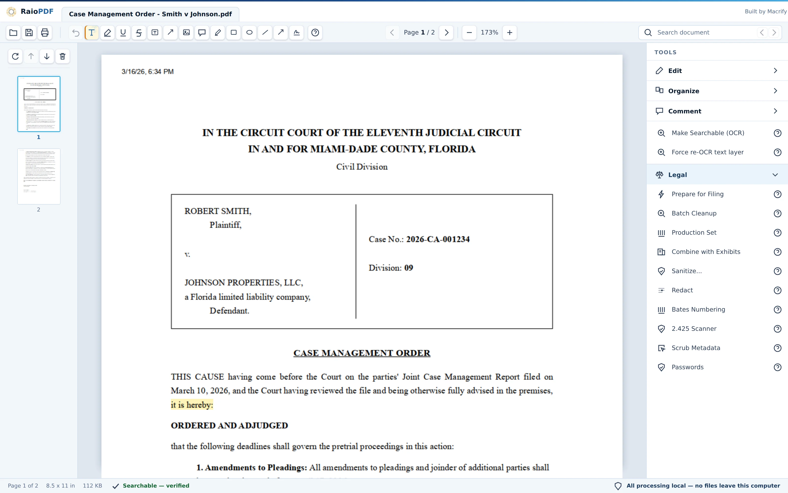

Everything you use Acrobat for, day to day — free, full-featured, and it never leaves your computer.
Plus the legal workflows Adobe never bothered building.
I built this because editing a file that's already on your machine shouldn't need an account and a cloud trip first. There's more to that story a couple scrolls down — why I built it, and why it's free
Checking GitHub for the latest release…
RaioPDF is in active development. The first signed Windows installer ships here first.
Watch the repo on GitHub →
Why this exists
Nothing makes me feel more like a crotchety old man than how software works today. I remember when you got software by someone handing you a floppy disk and that was that. But at some point, software companies realized that they could make unlimited money by renting the software out to users rather than selling it, and that became the only way productivity software was sold. And because software was so technically complicated and expensive to make, customers didn't have much of a choice in the matter.
Nobody at my firm likes dealing with Acrobat. Its bloat stresses computers, its licensing quirks can bring work to a standstill, it constantly pushes features nobody wants to use, and we're paying thousands for the privilege. Editing a file that's already sitting on your own computer shouldn't require an account, a cloud upload, and a cavalcade of minor annoyances. So in this age of agentic coding, I asked how hard it would be to build a fully featured PDF program the old fashioned way. Turns out it's not that hard.
RaioPDF is the other way of doing it: a full, genuinely useful PDF suite — including the less-glamorous legal stuff like true redaction and Bates numbering — given away for free, running entirely on your own machine, permanently.
Turns out you don't need a subscription and a login screen to make solid software — you just have to build it. And once someone proves that, "this is just how PDF software works now" stops being true. That's really the point: not to out-feature any particular vendor, but to show a firm doesn't have to just accept whatever terms it's handed for a task this basic.
And because you can just build it yourself, you can add in the functionality you've always wanted and leave out the stuff you don't. Regulating PDFs for e-filing has always been a major annoyance of mine. Some features, like exporting a PDF into size-limited chunks, just don't seem to exist in Acrobat (or I can't find them). Some are buried under a hundred configurations I don't want or understand.
I believe that using Raio is a genuinely better experience than using Acrobat. Without the bloat, it's snappier. Without all of the features I've never used, it's less confusing and clunky to operate. And with the additional law practice-specific improvements, a lot of pain points of practice are smoothed out.
This went from an idea to a working prototype in about twelve hours. Not because I'm an engineering prodigy — I'm a lawyer — but because the tools for building solid, deterministic software have gotten game-changingly powerful. If one attorney with a laptop can put a real dent in "free local PDF suite" over the course of an evening, the assumption that you need a giant company and a subscription to get decent software was already on its way out.
The spirit airlines of software is arriving, and even if you don't like it, the Adobes, Microsofts, and others in the world are going to have to start competing with software that is free, convenient, reliable, and easy to use.
Jacob — attorney, and the one who built RaioPDF
Four ways it fits into a real day at the firm
Download the installer, open it, use it.
No account screen, no sign-in, no "create a free account to continue."
Drop in a scanned PDF, hit Make Searchable.
OCR runs entirely offline — no upload, no wait on a server.
One click, "Prepare for Filing."
Pick your court's e-filing pack, get a prep checklist and a rule-cited preflight report, and RaioPDF normalizes every page and splits an oversized file into properly labeled, sequential, portal-compliant parts.
"Combine with Exhibits."
Assemble a motion or brief with exhibit files in order, auto-stamped ("Exhibit A," configurable) and auto-bookmarked.
Real screens from the real app
No mockups. Every screen below is RaioPDF itself, editing a (fictional) case file — tab through the tools, or just watch it move.

Highlight, underline, redact, draw — and a status bar that tells you the truth about the text layer underneath.
18 seconds, no narration: a court order opens, a clause gets highlighted, Prepare for Filing runs, jurisdiction packs switch, and an exhibit binder gets built.
A full day-to-day Acrobat replacement, plus the legal workflow Acrobat skipped
The everyday Acrobat replacement
View, search, and organize (merge, split, reorder, extract, insert, rotate, crop, repair). Annotate with highlight, underline, strikethrough, freehand draw, shapes, callouts, text boxes, and comments. Fill forms, sign — at $0, permanently, no watermarks or nag screens.
Honest text layers — the status bar says plainly whether a document's text is verified searchable, missing, or garbled. "Fix garbled text" rebuilds a bad layer offline, and refuses to claim success it can't verify. Not just a feature — it's the whole voice of this product: never claim more than it can check.
Unlock PDFs — save a decrypted copy of a password- or owner-restricted PDF, supplying the password yourself when one's required. The original stays untouched. (Adding password protection isn't in this build yet.)
Native MCP integration — still no AI built into RaioPDF itself, but the installer bundles an off-by-default connector exposing twenty local tools so your own AI agents can drive the toolbox.
In-app help for every tool, offline — the same articles are published at the Help link above.
The legal workflows Adobe never bothered building
Jurisdiction packs for e-filing — Florida Courts E-Filing Portal, Federal CM/ECF, Georgia (eFileGA and PeachCourt), and Indiana (IEFS). Every constraint cites its authority and the date it was last verified; Florida is the default pack. Guidance, not legal advice.
True redaction — content is actually removed and verified by re-extraction, not a black box drawn over text that's still there underneath. The verifier is garble-aware: a broken text layer can't fake a clean result, and if verification fails, no output is written at all.
Filing packet builder — assemble a multi-document filing as one packet with a manifest, including checks like Florida's certificate-of-conferral requirement on motions (Fla. R. Civ. P. 1.202).
Production sets — Bates-numbered discovery productions from a document set: confidentiality designations, index files, volume splits.
Batch cleanup — queue OCR, compression, sanitizing, and metadata scrubbing across many PDFs at once, against a jurisdiction pack.
e-filing preflight report with the actual rule citations (Fla. R. Gen. Prac. & Jud. Admin. 2.520/2.525) attached.
Sensitive-info scanner — assistive detection of SSNs and account numbers per Fla. R. Jud. Admin. 2.425, before a filing goes out. One honest flag: never trust AI with legal reasoning — verify before you rely on it.
Bates numbering across an entire document set in one pass.
Metadata scrubbing before production or filing.
The spirit airlines of software is arriving, and even if you don't like it, the Adobes, Microsofts, and others in the world are going to have to start competing with software that is free, convenient, reliable, and easy to use.Why now
What RaioPDF is not
Not "AI-powered." No AI features built into RaioPDF — if I wanted an AI summary I could go to a million other more useful places first.
Not released yet. Pre-alpha, no promised date. But if you want it, I'll give it to you.
Windows first. macOS later — no date promised.
Not trying to win a features arms race. This isn't about beating anyone spec-for-spec — it's about proving the free, local, and genuinely competitive alternative can exist at all.